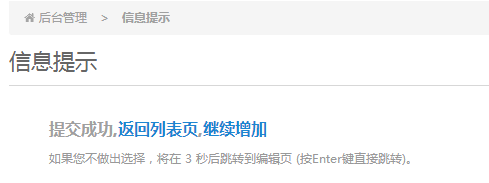

部分浏览器(IE)会存在按键冲突,请尝试使用另外的浏览器
CTRL+ENTER:在有表单的页面可以按此快捷键进行表单的提交,不需要手动点击提交按钮
ALT+Z:快速进入当前栏目的栏目配置页面
ALT+X:快速进入当前栏目的字段管理页面
ALT+V:快速进入当前栏目的文章列表页
ALT+A:快速进入当前栏目的文章增加页
ALT+S:快速进入当前栏目的变量页面
ALT+F:进入文件管理
ALT+H:新窗口中打开网站首页(部分浏览器会被屏蔽)
提示页快捷键:在后台提交后,一般会跳出提示页面,如下图

此时按下数字键"1"相当于"返回列表页",按数字键"2"相当于"继续增加",
如果有更多的链接,按下相应的数字键,将直接跳转至相应的链接地址.
按回车键或空格键将直接跳转至默认页面,不必长时间的等待,非常方便操作.
1.4.5版本新增:后台文章列表页 可以通过(按住shift键+点击文章选择框)来批量选择文章